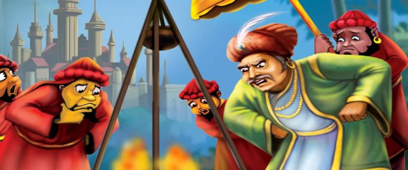

😄

On a cold winter day, Akbar and Birbal took a walk along the lake. A thought came to Birbal that a man would do anything for money. He expressed his feelings to Akbar. Akbar then put his finger into the lake and immediately removed it because he shivered with cold. Akbar said, “I don’t think a man would spend an entire night in the cold water of this lake for money.” Birbal replied, “I am sure I can find such a person.” Akbar then challenged Birbal into finding such a person and said that he would reward the person with a thousand gold coins.
Birbal searched far and wide until he found a poor man who was desperate enough to accept the challenge. The poor man entered the lake and Akbar had guards posted near him to make sure that he really did as promised. The next morning the guards took the poor man to Akbar. Akbar asked the poor man if he had indeed spent the night in the lake. The poor man replied that he had. Akbar then asked the poor man how he managed to spend the night in the lake.
The poor man replied that there was a street lamp nearby and he kept his attention affixed on the lamp and away from the cold. Akbar then said that there would be no reward as the poor man had survived the night in the lake by the warmth of the street lamp. The poor man went to Birbal for help.
The next day, Birbal did not go to court. The king wondering where he was, sent a messenger to his home. The messenger came back saying that Birbal would come once his Khichri(Rice) was cooked. The king waited hours but Birbal did not come. Finally, the king decided to go to Birbal’s house and see what he was up to.
He found Birbal sitting on the floor near some burning twigs and a bowl filled with Khichri(Rice) hanging five feet above the fire. The king and his attendants couldn’t help but laugh.
Akbar then said to Birbal “How can the Khichri(Rice) be cooked if it so far away from the fire?”
Birbal answered, “The same way the poor man received heat from a street lamp that was more than a furlong away.”
The King understood his mistake and gave the poor man his reward.
Moral: A small ray of hope is enough to inspire the one who is ready to work hard to turn his dream into a reality.